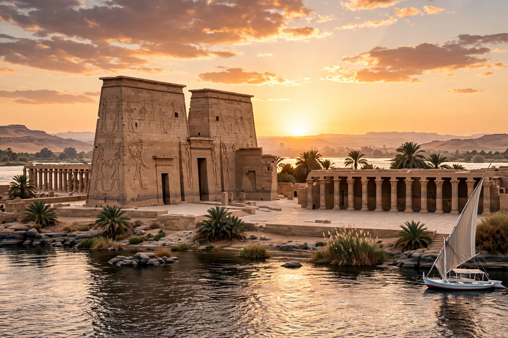

| Philae | |
|---|---|
 | |
| Location | Agilkia Island, near Aswan, Egypt |
| Principal deity | Isis |
| Main construction | Ptolemaic period, from 380–362 BCE onward |
| Relocated | 1972–1980, UNESCO salvage campaign |
Philae (Greek: Φιλαί; Ancient Egyptian: P'aaleq) is an island complex in the Nile near Aswan, Egypt, home to one of the most celebrated temples of ancient Egypt, dedicated to the goddess Isis. The surviving buildings, mostly Ptolemaic and Roman, include the great Temple of Isis, a mammisi (birth house), the elegant Kiosk of Trajan and temples to Hathor and other deities.
Philae was a major centre of the Isis cult, drawing pilgrims from across the Mediterranean world; Egyptian tradition held that the god Osiris was buried nearby on the island of Biga, making the region sacred. The temple was one of the last functioning pagan shrines of Egypt: its priests still carved inscriptions in the 4th century CE — the last known hieroglyphic inscription dates to 394 CE — and the temple was finally closed under Justinian around 537 CE and converted into a church.
The first Aswan dam (1902) left Philae submerged for much of each year, staining and eroding the stonework. The completion of the High Dam in 1970 threatened permanent inundation, so under UNESCO's Nubian salvage campaign the entire complex was dismantled into some 40,000 blocks and re-erected on higher Agilkia Island, reshaped to mimic the original setting, between 1972 and 1980. Philae is now part of the UNESCO World Heritage listing "Nubian Monuments from Abu Simbel to Philae".